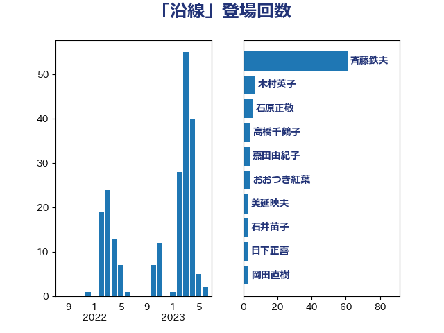

単語「沿線」

| 斉藤鉄夫 | 公明党 | 61 回 |
| 木村英子 | れいわ新選組 | 7 回 |
| 石原正敬 | 自由民主党 | 6 回 |
| 高橋千鶴子 | 日本共産党 | 4 回 |
| 嘉田由紀子 | 無所属 | 4 回 |
| おおつき紅葉 | 立憲民主党 | 4 回 |
| 美延映夫 | 日本維新の会 | 3 回 |
| 石井苗子 | 日本維新の会 | 3 回 |
| 日下正喜 | 公明党 | 3 回 |
| 岡田直樹 | 自由民主党 | 3 回 |
| 高橋光男 | 公明党 | 2 回 |
| 青山大人 | 立憲民主党 | 2 回 |
| 紙智子 | 日本共産党 | 2 回 |
| 笠井亮 | 日本共産党 | 2 回 |
| 福島伸享 | 無所属 | 2 回 |
| 神津たけし | 立憲民主党 | 2 回 |
| 森屋隆 | 立憲民主党 | 2 回 |
| 木村次郎 | 自由民主党 | 2 回 |
| 小森卓郎 | 自由民主党 | 2 回 |
| 加藤鮎子 | 自由民主党 | 2 回 |
| 中野英幸 | 自由民主党 | 2 回 |
| 三上えり | 立憲民主党 | 2 回 |
| 高見康裕 | 自由民主党 | 1 回 |
| 階猛 | 立憲民主党 | 1 回 |
| 長坂康正 | 自由民主党 | 1 回 |
| 金子恭之 | 自由民主党 | 1 回 |
| 豊田俊郎 | 自由民主党 | 1 回 |
| 谷田川元 | 立憲民主党 | 1 回 |
| 西岡秀子 | 国民民主党 | 1 回 |
| 篠原孝 | 立憲民主党 | 1 回 |
| 穀田恵二 | 日本共産党 | 1 回 |
| 秋野公造 | 公明党 | 1 回 |
| 田村貴昭 | 日本共産党 | 1 回 |
| 田村智子 | 日本共産党 | 1 回 |
| 浅川義治 | 日本維新の会 | 1 回 |
| 永岡桂子 | 自由民主党 | 1 回 |
| 永井学 | 自由民主党 | 1 回 |
| 櫻田義孝 | 自由民主党 | 1 回 |
| 横沢高徳 | 立憲民主党 | 1 回 |
| 榛葉賀津也 | 国民民主党 | 1 回 |
| 末松義規 | 立憲民主党 | 1 回 |
| 山添拓 | 日本共産党 | 1 回 |
| 山本佐知子 | 自由民主党 | 1 回 |
| 小島敏文 | 自由民主党 | 1 回 |
| 古川康 | 自由民主党 | 1 回 |
| 古川元久 | 国民民主党 | 1 回 |
| 伊藤渉 | 公明党 | 1 回 |
| 下条みつ | 立憲民主党 | 1 回 |